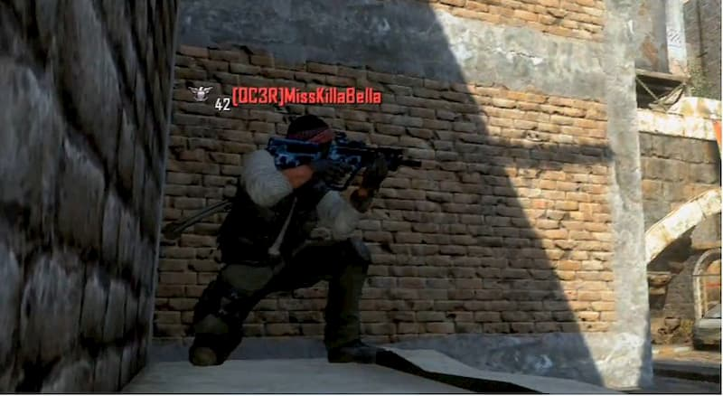
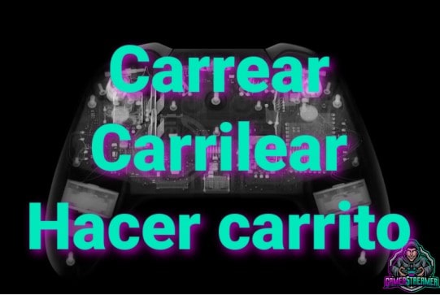
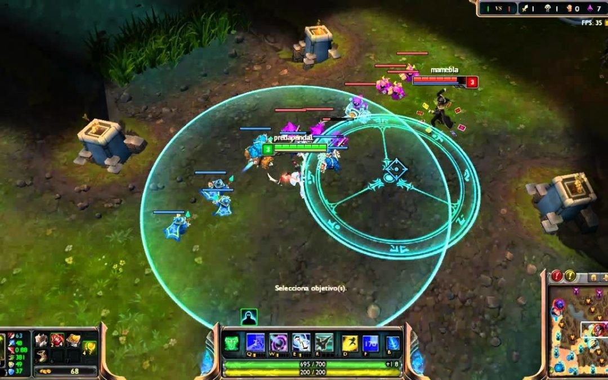
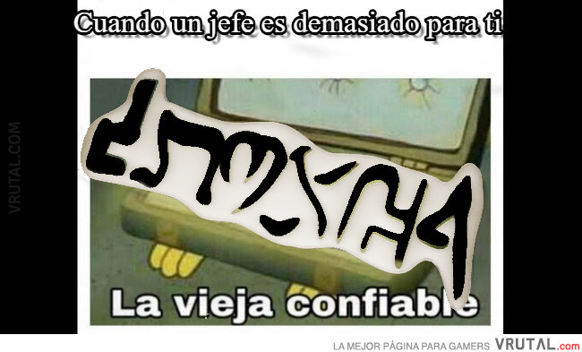

- Campero
- Jugador que se dedica a permanecer inmovil en un punto estrategico del mapa de difcil
acceso o escasa visibilidad esperando a que otros jugadores aparezcan en line de tiro
para dispararles.
|

|
- Campaña
- Es el modo de juego principal cuyas misiones estan ligadas entre si por una historia,
y donde el jugador debe acabar cada mision para continuar a la siguiente.
|

|
- Carrear
- Significa que tiene la habilidad o poder suficiente para gacer ganar a su equipo por si solo.
|

|
- Castear
- Publicar videos, en directo o grabados, de partidas de videojuegos competitivos haciendo comentarios sobre su desarrollo.
|

|
- Cooperativo
- Modo de juego donde dos o mas jugadores participan de manera simultanea en una misma partida, colaborando para avanzar en el juego.
|

|